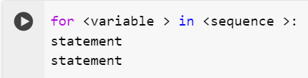
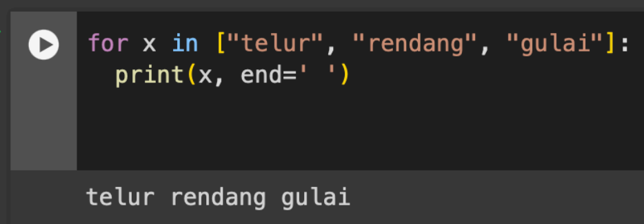
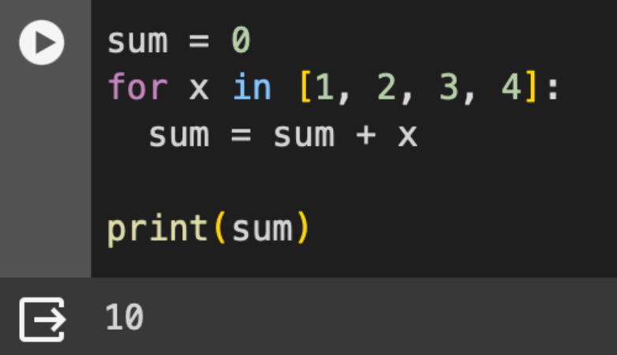
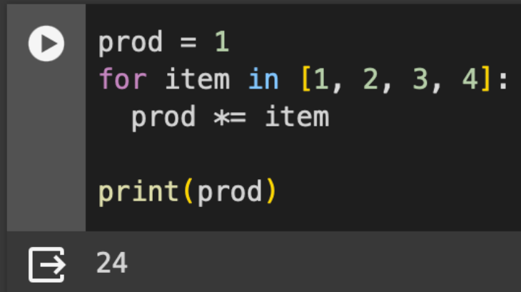
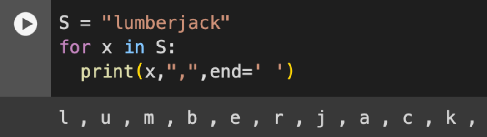
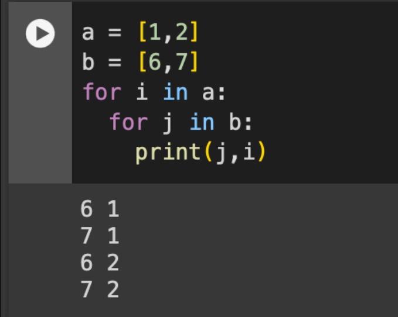
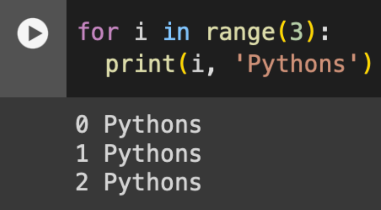
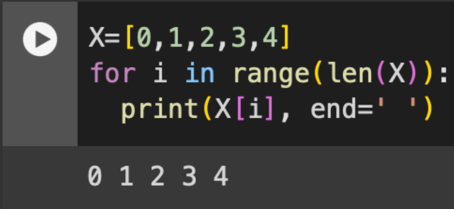
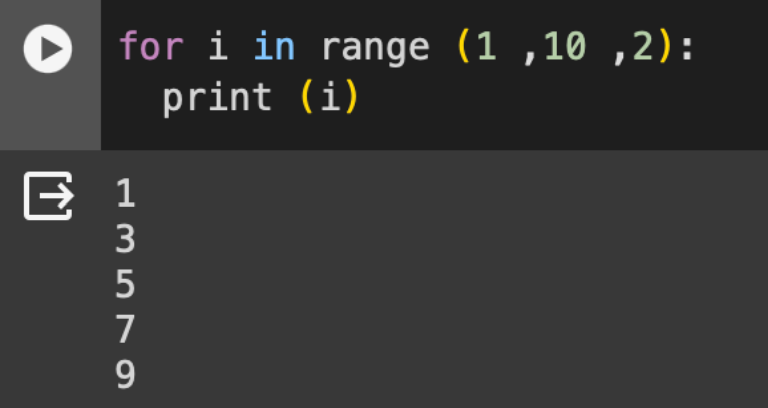

1. For Loop
Secara umum, fungsi for loop memiliki format seperti berikut ini:

Basic usage
Berikut adalah contoh penggunaan dasar dari for loop:

Example (1)
Gambar berikut menunjukkan contoh implementasi for loops untuk menjumlahkan semua komponen yang ada di dalam sebuah list.

Example (2)
Gambar berikut menunjukkan contoh penggunaan for loop untuk melakukan perkalian elemen-elemen yang ada pada list.

Gambar berikut menunjukkan contoh penggunaan for loop pada sebuah list yang elemen nya bertipe string/character

2. For loops
Nested for loop
Pada for loop dikenal juga istilah nested loop. Gamber berikut akan menunjukkan contoh nested for loop.

With range
Gambar berikut menunjukkan contoh for loop yang menggunakan fungsi range. Untuk kasus ini, tidak diperlukan sebuah list untuk menjalankan proses looping

Manual indexing
Gambar berikut menunjukkan contoh penggunaan for loop dengan menggunakan manual indexing

Step
Fungsi step digunakan untuk mengatur jumlah step pada for loop. Pada contoh-contoh sebelumnya, step yang digunakan adalah 1. Berikut merupakan contoh for loop yang menggunakan step lebih dari 1.
